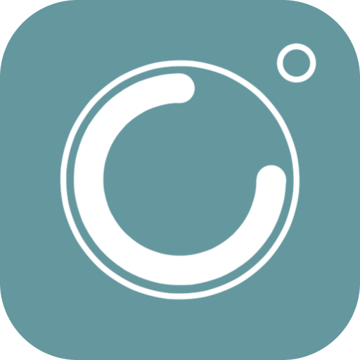

スキー・スノーボード向けのセルフタイマー機能付カメラ
Camera App for Snowboard / Ski Training with build-in timer
更新日：2026年9月16日。このポリシーはRyu Wakimoto・Yui Wakimotoが提供するShred Snap（オフトレカメラ）に適用されます。
カメラとマイクは動画・音声の撮影に、写真ライブラリへのアクセスは動画の保存・一覧表示・再生・共有・削除などに使用します。動画や写真は端末の写真ライブラリ等へ、メモや設定はアプリの保存領域へ保存します。これらの動画・写真やメモ本文を、利用状況分析のデータとして開発者へ自動送信する処理はありません。OSの写真同期やバックアップ、利用者が選んだ共有先では、それぞれのサービスの規約が適用されます。
位置情報を許可した場合、撮影動画に撮影場所を記録できます。共有する動画に位置情報が含まれる場合があります。各権限はOSの設定で変更できます。権限を無効にすると対応する機能が利用できなくなる場合があります。
アプリの改善、不具合の調査、利用傾向の把握のため、Google LLCのGoogle Analytics for FirebaseとFirebase Crashlyticsを使用します。アプリの起動・操作、撮影設定や録画時間、再生・検索・共有の操作、メモの有無や文字数、端末機種・OS・アプリのバージョン、インストール識別子、クラッシュやエラーの情報などがGoogleへ送信される場合があります。メモ本文や検索語そのものは分析イベントに含めません。エラー報告にはスタックトレースや診断用のエラーメッセージが含まれます。
SDKは端末の権限・OS・設定に応じて広告識別子等を扱う場合があります。分析サービスではネットワーク情報に基づくおおまかな地域情報等が処理されることがあります。「詳細なログを送信する」は追加のログを制御する設定であり、オフにしても通常の利用状況分析やクラッシュ報告をすべて停止する設定ではありません。
Android版には、今後のQRコード認識機能に備えてGoogle ML Kitのバーコード認識SDKが含まれています。現在の版ではQRコードを読み取る操作は提供していません。ML Kitの画像認識は端末内で実行されます。SDKが利用される際には、更新の確認や診断・利用状況情報等の送信が行われる場合があります。今後機能を提供する際には、読み取った情報の扱いを機能に合わせて案内します。
上記の分析・診断情報はGoogleのサービスで処理されます。処理・保存が利用者の国以外で行われる場合があります。取り扱いの詳細はFirebaseのプライバシー情報、Googleプライバシーポリシー、ML Kitの規約とプライバシー情報をご確認ください。
お問い合わせにはGoogle Formsを使用します。送信された問い合わせ内容と、利用者が記入した連絡先等は、問い合わせへの対応に使用します。外部リンクを開いた場合はリンク先のサービスにも情報が送信される場合があります。
メモや設定はアプリの保存領域に保持され、アプリの削除等で削除できます。写真ライブラリに保存された動画はアプリ削除後も残ることがあるため、必要に応じて写真アプリ等から削除してください。同期先やバックアップ内のデータは各サービスの設定で管理してください。
Googleへ送信した分析・診断情報は、各サービスの保持設定・規約に従って保存されます。端末上の削除操作で送信済みの情報が直ちに削除されるわけではありません。情報の取り扱い、開示・削除等についてのご相談はお問い合わせフォームからお寄せください。対象データを識別できる範囲で、適用される法令に従い対応します。
機能や利用するサービスの変更に応じて、このページと更新日を変更します。必要な場合はアプリ等でも変更をお知らせします。
Updated September 16, 2026. This policy applies to Shred Snap (Off Training Camera), provided by Ryu Wakimoto and Yui Wakimoto.
The camera and microphone capture video and audio. Photo-library access supports saving, browsing, playing, sharing and deleting media. Media is saved to your device's photo library or local storage; notes and settings are stored in the app. The app does not automatically upload these media files or note text to the developers for usage analytics. OS photo syncing, backups and destinations you choose when sharing are governed by those services' terms.
If you allow location access, the app can record the filming location in videos. Shared videos may retain this information. You can change permissions in your device settings; disabling them may make the corresponding features unavailable.
We use Google LLC's Google Analytics for Firebase and Firebase Crashlytics to improve the app, investigate failures and understand usage. Data sent to Google may include app launches and interactions, recording settings and duration, playback, search and sharing actions, note presence and length, device model, OS and app versions, installation identifiers, crashes and errors. Analytics events do not contain note text or search terms. Error reports include stack traces and diagnostic error messages.
SDKs may handle advertising identifiers depending on permissions, OS and settings. Analytics services may process approximate region information derived from network information. “Send detailed logs” controls additional logging; turning it off does not disable all standard analytics or crash reporting.
The Android app includes Google's ML Kit barcode-recognition SDK for a planned QR feature. The current version does not provide a QR-scanning action. ML Kit image recognition runs on the device. When the SDK is used, it may check for updates and send diagnostic and usage information. We will explain how decoded information is handled when the feature becomes available.
The analytics and diagnostic data described above is processed through Google services and may be processed or stored outside your country. See Firebase privacy information, the Google Privacy Policy and ML Kit Terms & Privacy for details.
Our contact form uses Google Forms. We use the information you submit, including any contact details you provide, to respond to your inquiry. Opening external links may also send information to the destination service.
Notes and settings remain in app storage and can be removed by deleting the app or clearing its data. Videos saved to the photo library may remain after uninstalling the app; delete them using your photo app when needed. Manage synced copies and backups through the relevant service settings.
Analytics and diagnostics already sent to Google are retained under the services' retention settings and terms. Deleting local data does not immediately delete previously transmitted data. For questions or access/deletion requests, use our contact form. We will respond under applicable law to the extent that the relevant data can be identified.
We will update this page and its date when features or services change, and provide additional notice in the app or elsewhere when needed.